Automotive UX · Spring 2025
Moto Safety Plug-In
An extension to Google Maps, Waze, or any navigation app intended to customize the motorcycle riding experience.
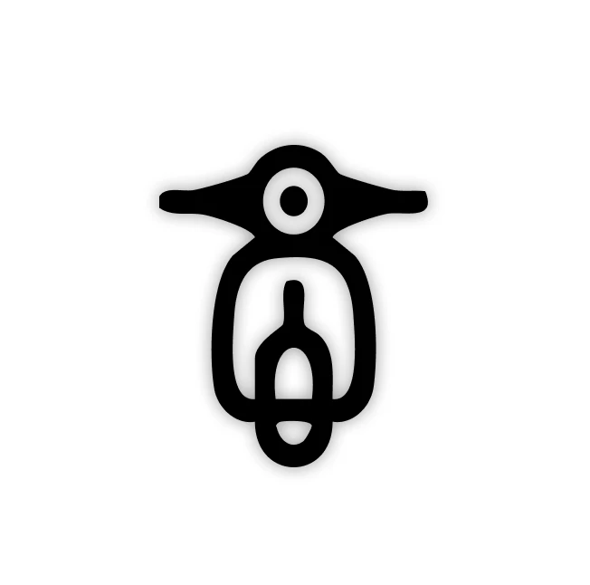
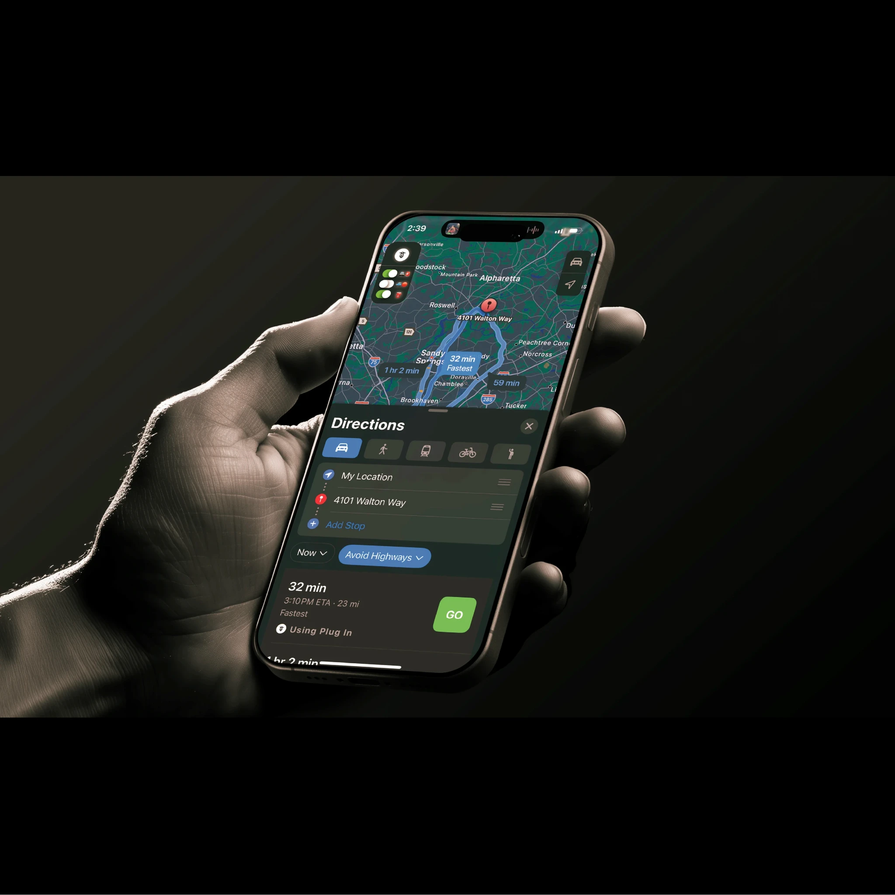
Physical & digital interfacing
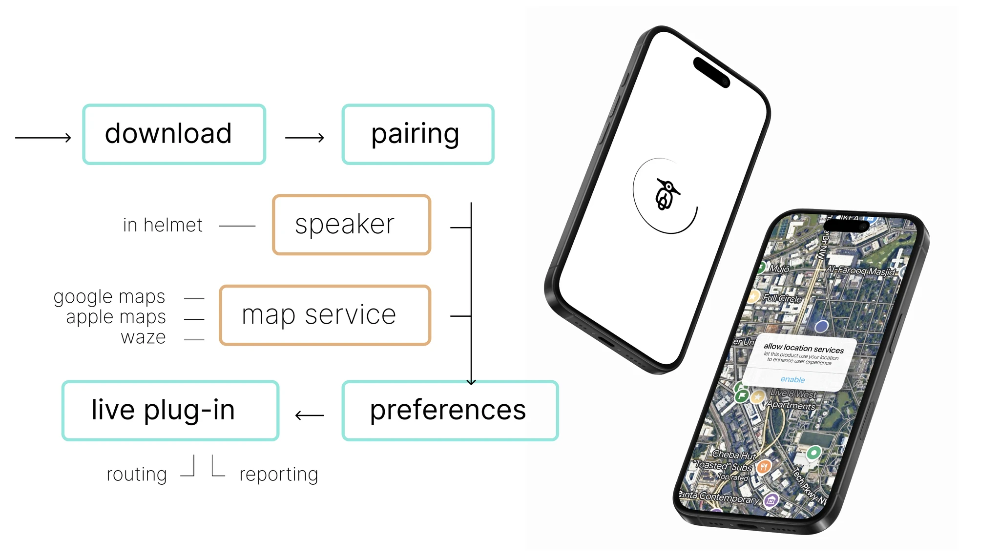
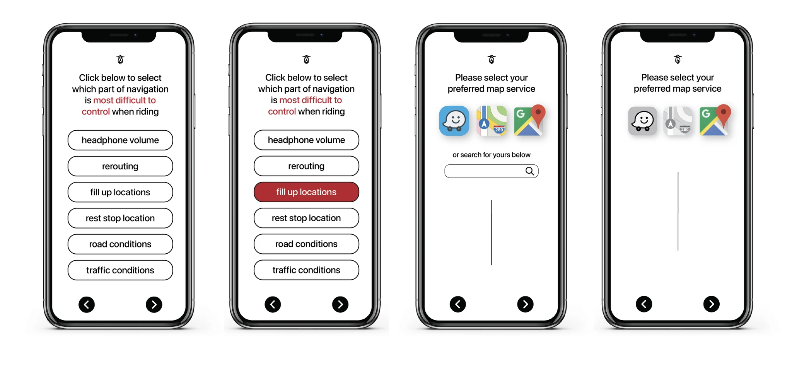
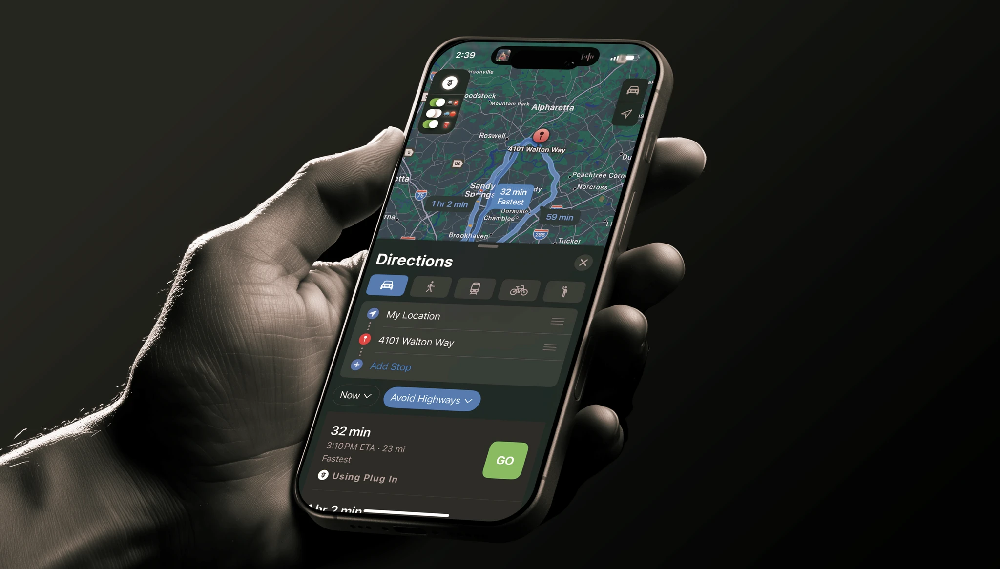
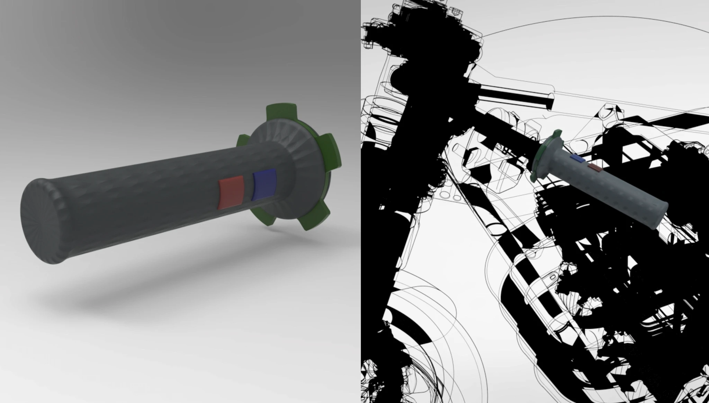
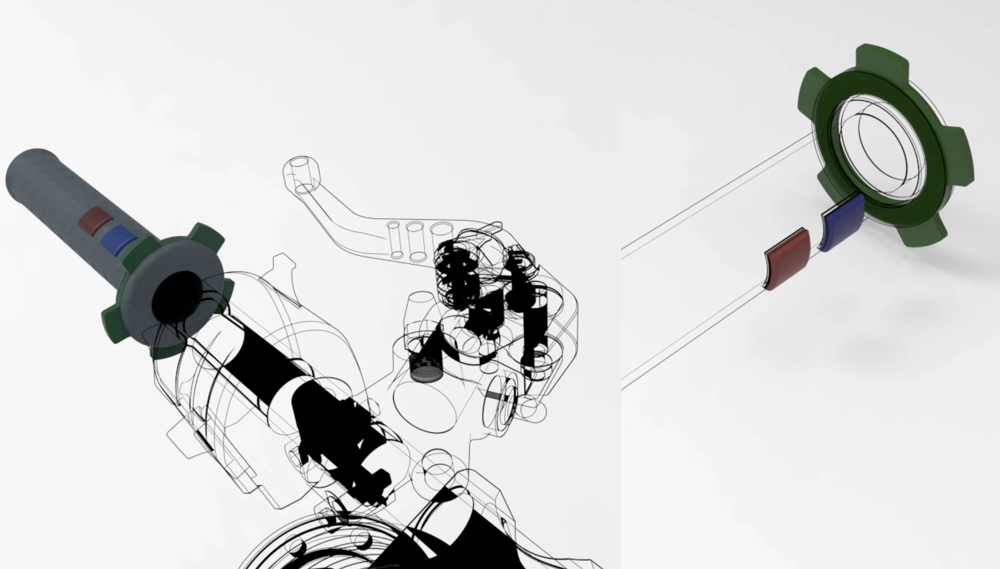
In this final step, we created mockups of our app interface and the physical handlebar add-on. We did some form fitting and testing with local riders, and we used their input to determine what would be most effective in terms of usage.
Process
Ridership pain points
Interviewed many different riders to identify the largest consumer-driven issues with riding a motorcycle.
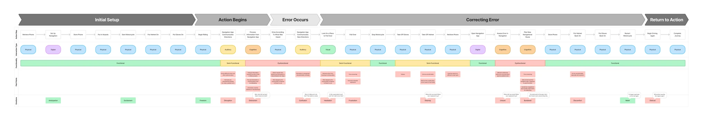
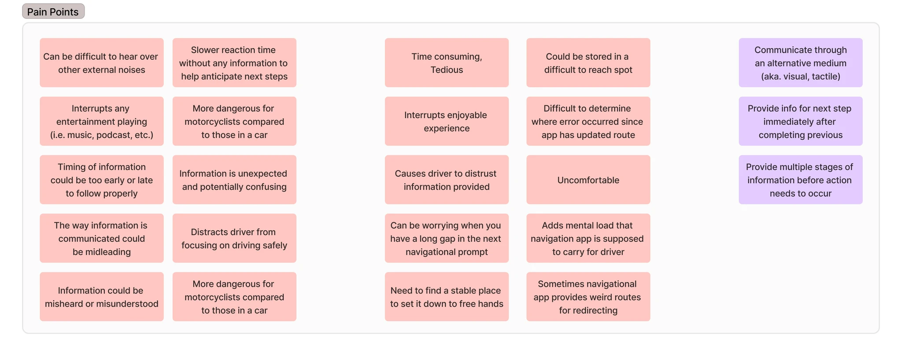
Ideation
The first step in our ideation was to bundle our ideas. We were trying to see where in the process (visually, tactically, or somewhere in between) had the most opportunity.
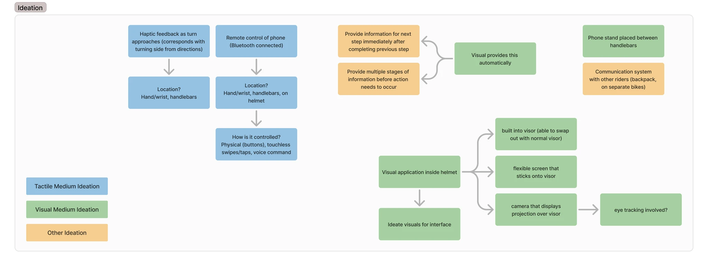
I then conducted an analysis of current technologies used in the area. We were trying to do something that was financially viable and non-invasive, so this ruled out some of the HUD ideas we were considering.
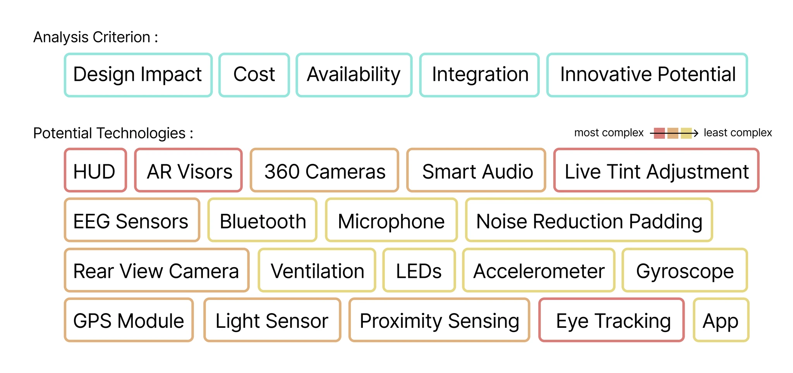
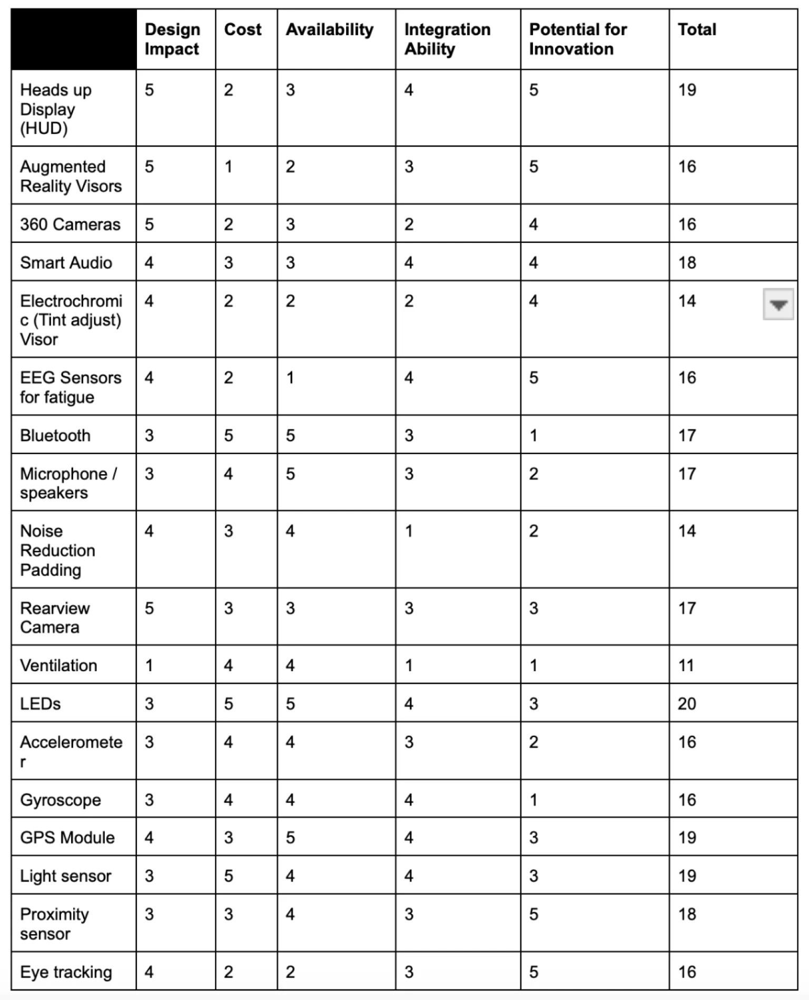
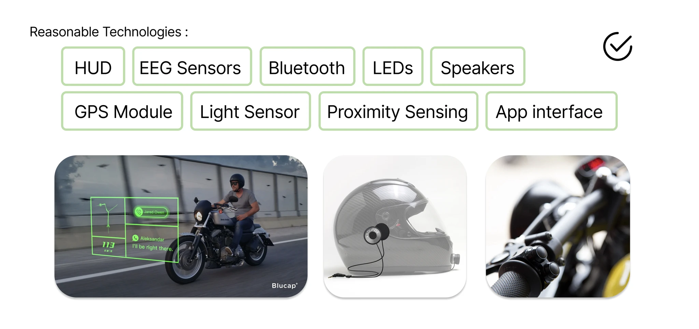
Solution bundling / finding
Following our technology research, we decided that our solution had to be multi-pronged. We needed to ease on-road navigation, but this would require many different features. These features were crafted and packaged through a plethora of meetings and user analysis sessions.
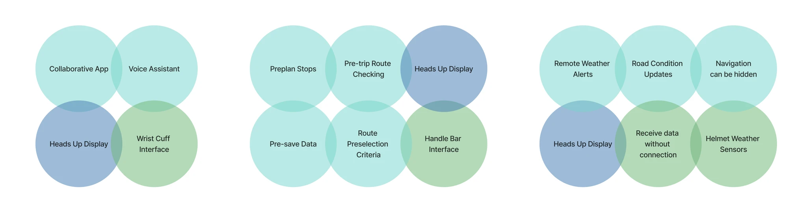
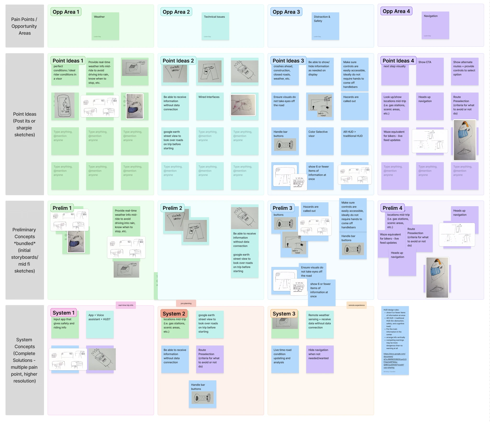
Below is a visual representation of these concept bundles. We knew that digital tech had to be incorporated no matter what.
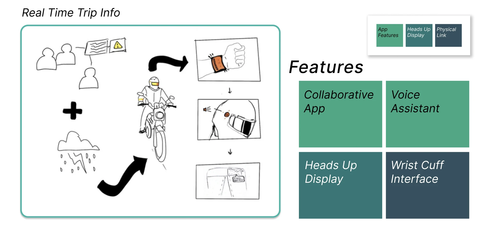
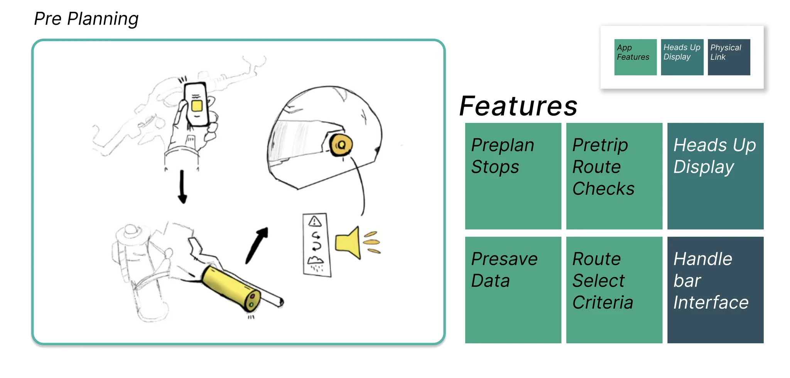
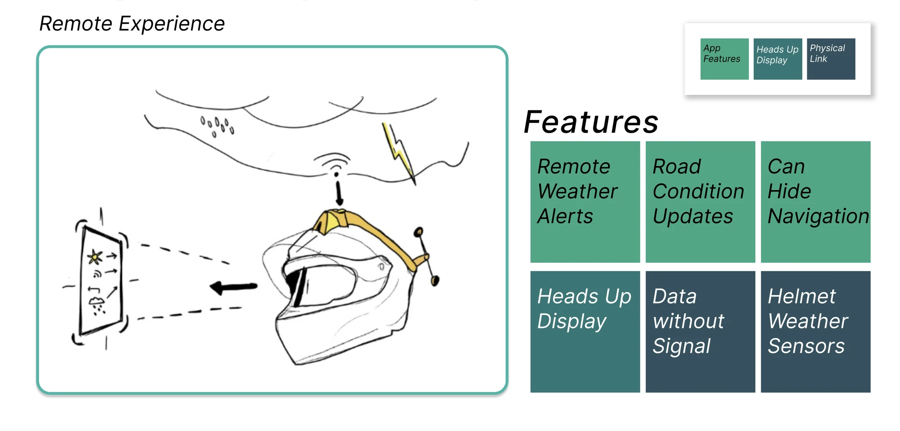
Product finalization
From bundling, we were able to determine what was needed in a final product. In our product, we felt that a user could benefit most from an app extension that was accessible by a physical handlebar add-on.
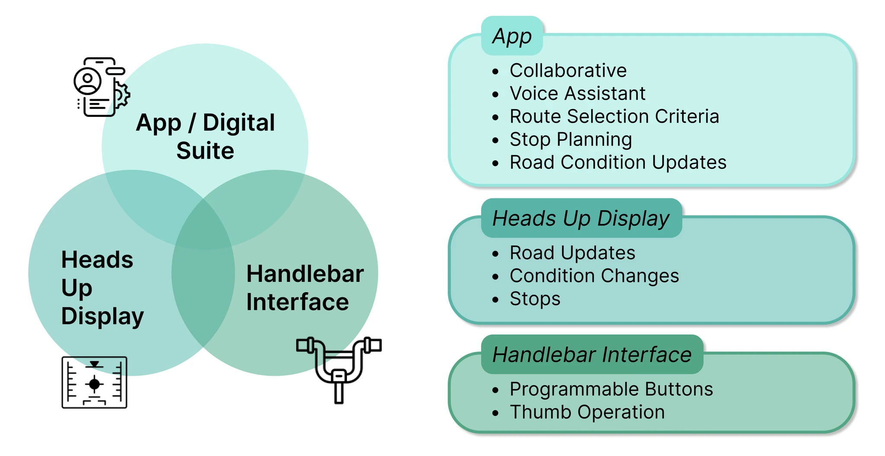